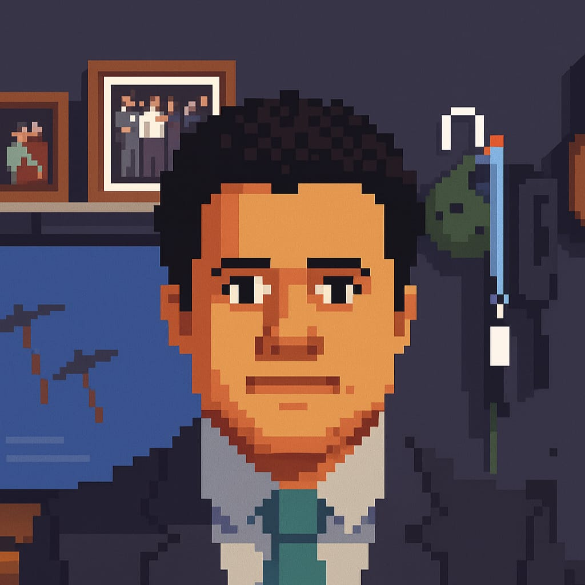

Lucas Maria
My Story
I am a biologist transitioning into self-taught Python development. I love solving problems with code, automating tasks, and building tools that make life easier.
Some projects here were developed with the help of AI tools like ChatGPT to speed up coding and testing. That said, every project reflects my practical understanding, debugging, adjustments, and organizational work. These projects showcase my ability to integrate libraries, work with external APIs, and solve problems effectively.
Skills
- Python (automation, scraping, data analysis)
- HTML, CSS, JavaScript
- Git & GitHub
- Excel and data visualization